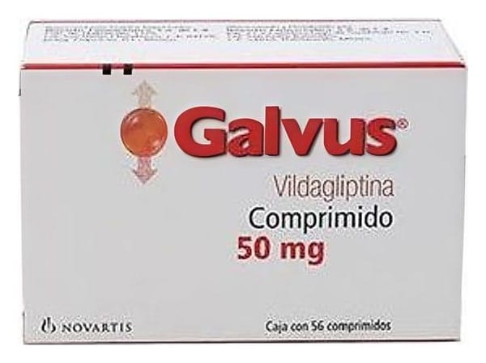

Galvus 50 mg Tablet, 56 Adet

Ne için kullanılır
KT · Bölüm 1GALVUS, ağız yolu ile kullanılan, kan şekerini düşüren ilaçlar olarak adlandırılan bir ilaç grubuna dahildir. GALVUS, 56 ve 180 tablet içeren aluminyum blister ambalajlarda takdim edilmektedir. GALVUS, yalnızca diyet ve egzersizle kontrol altına alınamayan şeker hastalığının (Tip 2 diyabetin) tedavisinde kullanılan bir ilaçtır. Kan şeker düzeyinin kontrol altına alınmasına yardım eder. Şeker hastalığı (Tip 2 diyabet), vücudunuzun yeterli miktarda insülin üretemediği ya da üretilen insülin doğru şekilde çalışmadığında gelişir. Hastalık ayrıca, çok fazla glukagon adı verilen hormonun üretildiği durumlarda da gelişebilir. İnsülin, özellikle yemeklerden sonra olmak üzere kanınızdaki şeker düzeyinin düşürülmesine yardım eden bir maddedir. Glukagon, karaciğerde şeker üretimini tetikleyerek kan şekeri
düzeyinin yükselmesine neden olan bir maddedir. Bu maddelerin her ikisi de pankreas tarafından üretilir. GALVUS, pankreasın daha fazla insülin ve daha az miktarda glukagon üretmesini sağlar. Bu şekilde, kan şeker düzeyinin kontrol altında tutulmasına yardım eder. Doktorunuz GALVUS’u size kan şeker düzeyinin tek başına kullanılan bir ilaçla kontrol altına alınamadığı durumlarda başka bir kan şekerini düşüren ilaç ile kombinasyon şeklinde kullanmak üzere reçete edecektir. GALVUS ile tedavi görürken size önerilen diyet ve/veya egzersiz programına devam etmeniz önemlidir.